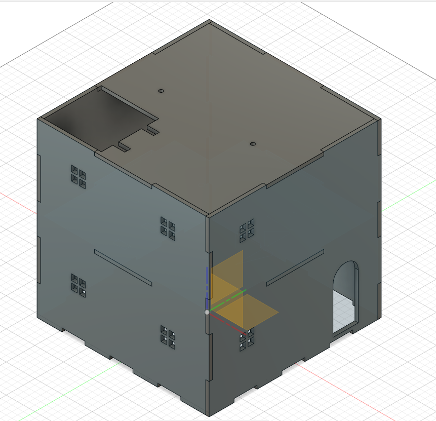
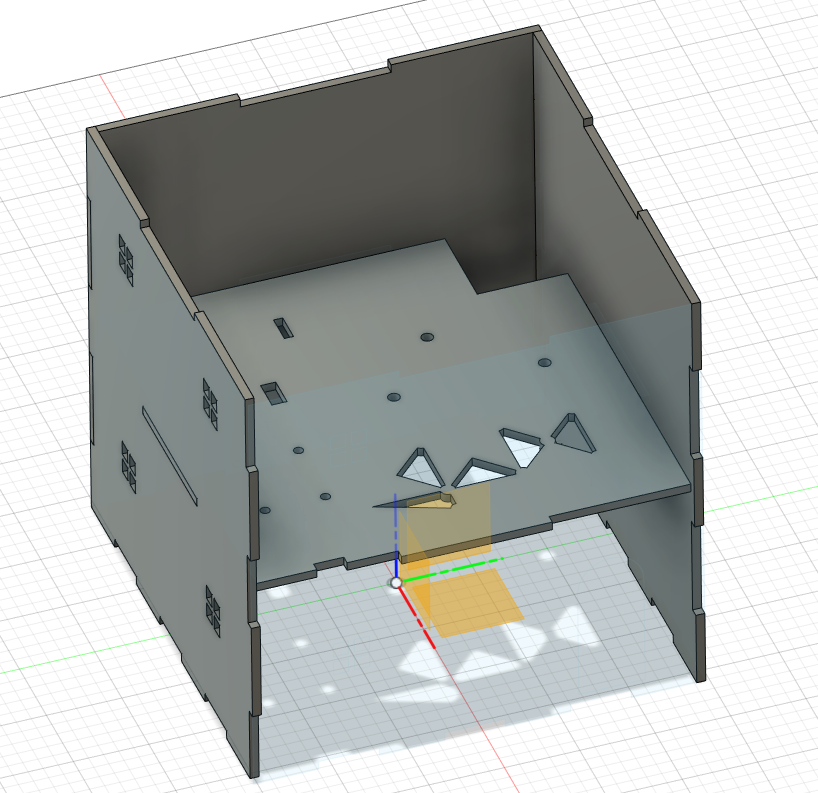
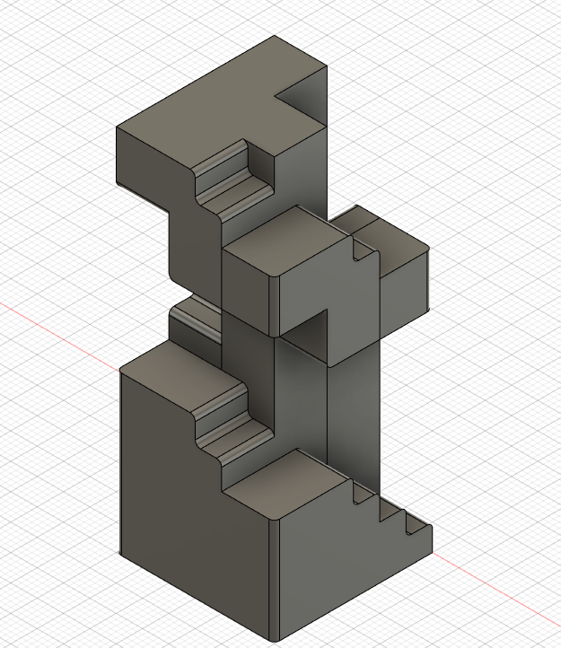

Throughout the semester, I didn't really have that much of an idea of what I was gonna make for my final project. I thought of improving my idea from Ep1000, I've thought about another project related to music, but nothing seemed to click. So as I was casually scrolling through news the other day, I saw this news about flooding in India which caught my eye. Because we're living in singapore, we are so called oblivious and unconcerened about natural disasters, but what if one day it actually happens in singapore? With this idea in mind, I started conceptualising about a house that will defend/warn its owners about a flood.
With a idea in mind, I started working fast. What features do I want? How would I make the house? After some research, I finalised my ideas.
I wanted a house that would react to flooding, by warning its owner that a flooding is occuring through the use of buzzers and LEDs. Not only that, if the owner was outside, the house should also be able to warn the user that a flooding is occuring at their house. SO I wanted to use a bluetooth module to send a message wirelessly. Lastly, I wanted to make the house react to te flood and defend its users against it by elevating the users up, through a lift.
Now with the features in mind, I started designing an outer shell for the house, well firstly, I wanted this house to be see through so that I can see the LED and other components from outside.I also wanted the house to be able to be joint on its own without any glue. So I got on to designing.
 The opening at the top is for the lift. The holes in the centre is for wiring and LEDs.
After getting the house out, I decided to add some asthetics to this house. So I designed a spiral staircase.
Now after having a completed design, I went on to laser cut the house and 3D print the staircase, they came out great. After that was assembly.


Oh yeah, I also found some really good looking furniture online to add on to my house as it was looking slightly empty.But overall, I was pretty happy with the final looks of the house.
Next would be putting in the electronics and programming it. Firstly, I brought all of my components and tested them individually. For my final board, I decided to use my T85 board as I thought that it would be enough as my functions were pretty simple.
After testing everything including my full programme on an Arduino Uno board, I decided it was time to transfer it to my T85 board. But here is where the problem starts. Firstly, I didn't have enough pins to accomodate all of my components, not only that, the servo motor which I was going to use required a large amount of current and if I were to use a current that large, it would certainly fry my bluetooth and other components. So after careful consideration, I decided to ditch the servo. So here is my final circuit.

-
Components
- HC-05 BLuetooth
- BUzzer
- LED
- AT TIny85 Board
- 1.1k ohms resistor
- 3.3k ohms resistor
- Breadboard
- Water Sensor
Finally, despite trying multiple times, I still couldn't get my bluetooth module to work via the T85 board, I still have no idea why, even after searching up multiple guides on how it works I still couldn't get it working. So in the end, it was a interesting project to make and design, I certainly wish I could have done it better within the given timeframe. But maybe that will be save for during the holidays.
Link to code, video, slides and Fusion 360 Model.